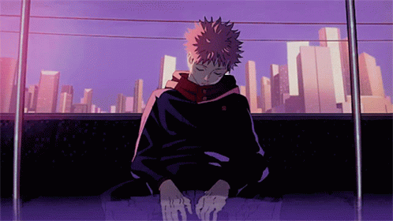
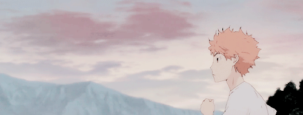

Honorable mentions: Saiki K, Death Note, Samurai Champloo, Fruits Basket, and Yuri!! on Ice

Violet Evergarden is about a girl who maneuvers her way into society after the war. She seeks for a purpose
and gets into the world of the Auto
Memory Dolls. This is a job that requires social and connection skills, which she has to learn over time.
Review: If you're into sad anime or looking for a cry, this anime is for you. Almost every episode is an emotional rollercoaster. Other than that,
I
loved the art style and the concept of this story. It is definitely a must watch!

Cowboy Bebop consists of a team of bounty hunters in space! They try to search for wanted fugitives, but get into all kinds of trouble along the way.
Review: This is definitely a classic action anime! This is one of my first anime I ever watched and it will still be one of my favorites.

Jujutsu Kaisen focuses on Yuji Itadori, who lives in a world filled with evil and sorcerers. He hears about a cursed talisman called the finger of
Sukuna, a demon and it’s being targeted by other cursed beings.
Unfortunately, he comes across the finger and eats it in order to save his friends -
he ends up becoming the demon's host. He sets off on a journey to defeat this entity!
Review: One of the best modern anime I've ever watched. I love the story and how comedic it is! It really gets you hooked with the plot and
animation.

Maid Sama centers upon a girl named Misaki Ayuzawa, who has to juggle her school reputation and maid job. She is the president of Seika High
School and tries to make the school a better place for girls.
Lead male, Takumi Usui, takes an interest in her hard work and commitment.
Review: I binge watch this show many times! Though I’m not into romance anime. I love the Ayuzawa and Usui dynamic so much and the show
is really funny. Also, I can relate to the main character in a way, which I like.

Haikyuu!! is about a boy named Hinata Shouyou, who gained an interest in volleyball. He is quite determined to become a championship’s star
player, despite his height. He meets interesting people along the way and ultimately
creates strong bonds.
Review: I really enjoyed this sports anime. A lot of my friends love it as well. The character developments and energy in this show were really
amazing! Not to mention being emotionally attached with the characters.